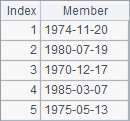

Multicursor operations
You can choose to skip this section if you are not a professional programmer. This won’t affect your learning about the other contents of this Tutorial.
A cursor is generated from a single file or database. But sometimes you may need multiple such cursors to be the source data. In those cases, you can define a multicursor to perform parallel computation.
CS.mcursor() function is used to define a multicursor, from which data can be fetched using fetch function like a normal cursor. For example:
|
|
A |
|
1 |
=file("Order_Wines.txt") |
|
2 |
=file("Order_Electronics.txt") |
|
3 |
=file("Order_Foods.txt") |
|
4 |
=file("Order_Books.txt") |
|
5 |
=[A1:A4].(~.cursor@t()).mcursor() |
|
6 |
=A5.select(SalesID==1).fetch() |
A5 generates a sequence of cursors according to files in A1~A4 and creates a multicursor. A6 uses the multicursor as a normal one. A6’s result is as follows:

Data fetched from a multicursor will be stored in one table sequence, so the records in every cursor in the cursor sequence need to have the same structure. Besides, since parallel processing is used to fetch data from cursors, the order of the records will be changed when being fetched into the resulting table sequence.
But the parallel processing can effectively speed up the computation. Apart from a sequence consisting of multiple cursors, you can use cs.mcursor(n) function to generate a number of (the number is n) parallel subcursors based on a single cursor cs and create a multicursor. If n is omitted, the function will automatically set the number of parallel subcursors. For example:
|
|
A |
|
1 |
=file("Order_Wines.txt") |
|
2 |
=A1.cursor@t() |
|
3 |
=A2.mcursor(4) |
|
4 |
=A3.select(month(Date)==10) |
|
5 |
=A4.fetch() |
A multicursor generated from a single cursor has similar use to a normal cursor, except that data in the multicursor is fetched by parallel processing. Below is A5’s result:

Besides cs.mcursor() function that can generate a multicursor from a norml cursor, you can use A.cursor@m() function and f.cursor@m() function to create a multicursor directly based on a sequence or a file.
When CS.mergex(x) function merges cursors in a cursor sequence CS where the members are multicursors, these multicursors must have the same number of parallel (sub)cursors. Similarly, joinx() function, which joins multiple cursors, requires that all these cursors be multicursors with same parallel (sub)cursors, if at least one of them is a multicursor.